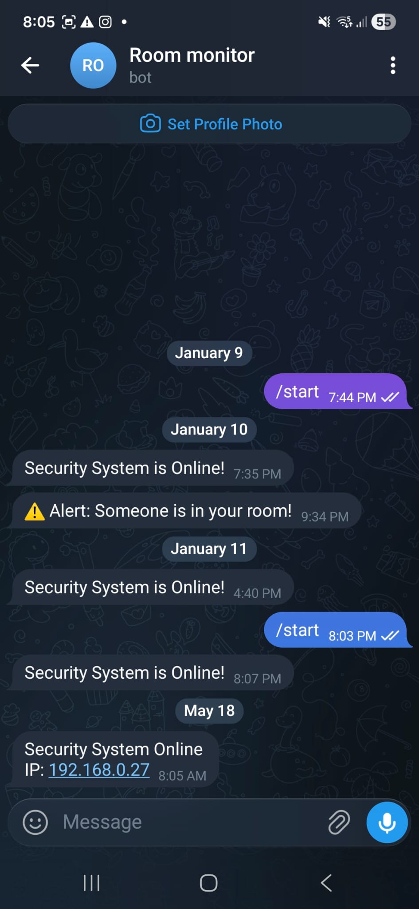

PROJECT:
ROOM_MONITOR &
SECURITY_SYSTEM
01. Objective
Build a low-cost, always-on room security monitor that detects intrusions and delivers instant alerts to my phone via Telegram — regardless of where I am. The system needed to be wireless, self-monitoring for silent failures, and deployable without a fixed position in the room.
02. Technology Used
03. The Challenges
Challenge 1 — Silent Failure: If the device lost power or WiFi, there was no way to know the room was unprotected. A security device that fails silently is worse than no device at all.
Challenge 2 — False Triggers: Ultrasonic sensors are sensitive to minor environmental changes — air currents, reflections, and sensor noise. A naive implementation triggered Telegram alerts constantly on non-events.
Challenge 3 — Dynamic Placement: The device doesn't have a fixed position in the room. Re-flashing firmware every time the detection range needed adjusting was completely impractical.
Challenge 4 — No Real-Time Clock: Alert timestamps and the web dashboard history were meaningless without accurate wall-clock time. The ESP32 has no onboard RTC, so time had to come from the network — and needed to handle Australian daylight saving automatically without manual intervention.
04. The Solutions
Silent Failure — Healthchecks.io Heartbeat: The ESP32 sends a ping to Healthchecks.io every 60 seconds. If three consecutive pings are missed — due to power loss, WiFi drop, or firmware crash — the service automatically sends a downtime email alert. The device can never go silently offline.
False Triggers — Multi-Ping Filter Algorithm: Rather than acting on any single sensor reading, the firmware requires a consistent change in distance across multiple consecutive pings before confirming an intrusion. One-off reflections and noise spikes are ignored entirely. Only a sustained, real presence triggers the alert.
Dynamic Range — Physical Buttons + Persistent Storage: Two push buttons increment and decrement the detection threshold directly on the device. The SSD1306 OLED provides live feedback showing the current range value. The threshold is saved to non-volatile flash via the ESP32 Preferences library — it survives reboots and power cuts with no reflashing needed.
Real-Time Clock — NTP + Auto Daylight Saving: The ESP32 syncs time over WiFi using NTP on boot. The timezone is configured with a POSIX string that handles AEST/AEDT switching automatically — no manual offset changes ever needed. The OLED shows the live clock in 12-hour AM/PM format when the room is clear.
Web Dashboard: A lightweight HTTP server runs on the ESP32 and is protected by Basic Auth. From any browser on the same WiFi network, the dashboard shows the live sensor distance, armed/disarmed status, current threshold, and a timestamped alert history log. Arm and disarm can also be triggered remotely via Telegram bot commands — /start and /status.
Multi-Network WiFi + Provisioning: The firmware uses a 3-stage boot sequence to connect: first tries credentials saved in NVS flash, then falls back to any hardcoded networks, and if all fail it launches its own open AP — RoomMonitor_Setup. Connecting to that AP and visiting 192.168.4.1 opens a simple web form to enter any WiFi network name and password. Credentials are saved to NVS flash and survive reboots and power cuts. A Reset WiFi button on the dashboard wipes saved credentials and triggers re-provisioning — the same pattern used in commercial IoT products like Sonoff and Shelly.
Telegram IP Alert on Boot: Every time the device comes online, a Telegram message is sent with the current local IP address — so the web dashboard is always reachable even if the router assigns a new IP.
05. Results
✅ System live and running for 3+ months with 99.9% uptime.
✅ Intrusion alerts delivered via Telegram in under 2 seconds of detection.
✅ Zero false positives since the multi-ping filter was implemented.
✅ Healthchecks.io correctly flagged every unplanned downtime event.
✅ NTP clock accurate and auto-adjusting for daylight saving — zero manual changes needed.
✅ Detection threshold adjustable on-device without re-flashing firmware.
✅ WiFi provisioning works first time — device deploys to any network without code changes.
✅ Telegram boot message delivers current IP on every startup — dashboard always reachable.
06. Lessons Learned
A device that fails without telling you is worse than no device. Healthchecks.io solved this with the heartbeat model — the device actively proves it's alive rather than passively hoping nothing goes wrong.
A single ultrasonic ping is unreliable. Environmental noise, reflections, and interference cause spurious values. Requiring consistency across multiple consecutive readings before acting eliminated false positives completely.
Re-flashing firmware to change a detection threshold is impractical in a real deployment. Physical buttons plus Preferences-backed persistent storage made the device fully self-contained and field-adjustable.
Hardcoding WiFi credentials means the device only works at home. The 3-stage provisioning boot — NVS first, fallback list second, AP mode last — is the same pattern commercial IoT products use. It makes the device deployable anywhere without touching the code.
Hardcoding UTC+10 breaks for half the year in Melbourne. The POSIX TZ string AEST-10AEDT,M10.1.0,M4.1.0/3 handles all daylight saving transitions automatically — the correct approach for any Australian IoT device.
07. Gallery


.jpeg)


